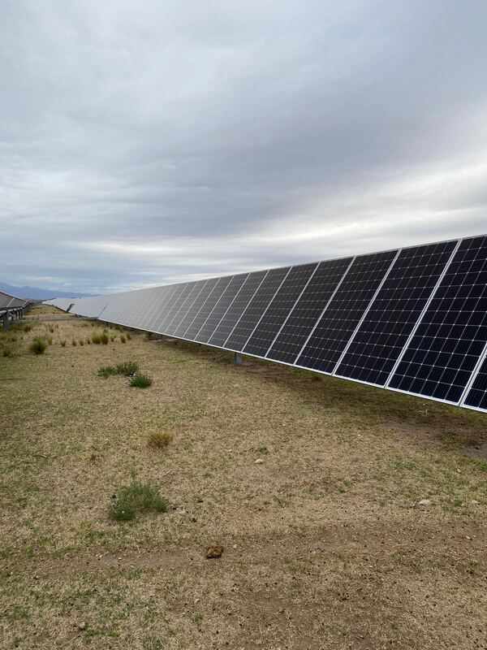

Antes de elegir tecnología, hay que entender la operación.
Una decisión energética afecta inversión, costos operativos, continuidad y capacidad futura. En Ecorise empezamos por leer el contexto completo, modelar escenarios y recién después definir la solución.
Diagnóstico
Consumo, demanda, infraestructura, restricciones y objetivos reales.
Modelado
Alternativas técnicas y económicas comparadas bajo supuestos explícitos.
Ejecución
Ingeniería, equipamiento, implementación, puesta en marcha y seguimiento.
Soluciones que empiezan por el problema, no por el catálogo.
La misma tecnología puede tener sentidos muy distintos según el sector, el perfil de consumo y la criticidad de la operación.

Controlar exposición energética sin comprometer producción.
Demanda, continuidad, expansión y decisiones de CAPEX.

Energía adaptada a estacionalidad y operación en campo.
Bombeo, frío, procesamiento y ubicaciones aisladas.

Infraestructura para operaciones que no pueden detenerse.
Depósitos, cámaras, centros logísticos y parques industriales.

De la prefactibilidad a la operación.
Podemos intervenir en distintas etapas sin forzar una única receta tecnológica.
Energía solar
Sistemas on-grid, off-grid e híbridos según perfil de consumo y restricciones.
Ingeniería
Prefactibilidad, dimensionamiento, evaluación técnica y soporte de decisión.
Mantenimiento
Inspección, diagnóstico y seguimiento para sostener desempeño y disponibilidad.
Una conversación útil empieza con datos, contexto y una pregunta concreta.
Si la energía tiene peso real en tu operación, podemos ayudarte a determinar qué vale la pena estudiar y qué no.
¿Hay una oportunidad energética en tu operación?
Podés empezar con una evaluación preliminar o coordinar una reunión con el equipo.
Evaluación preliminar Agendar reunión